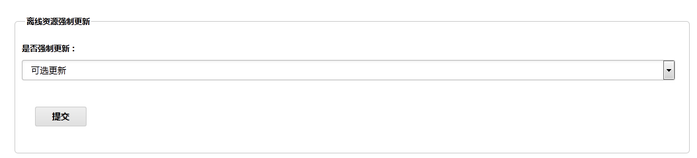
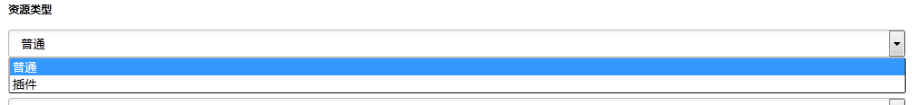
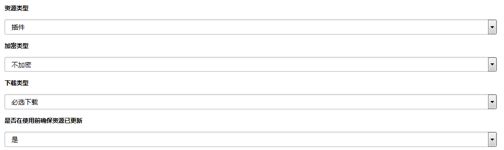
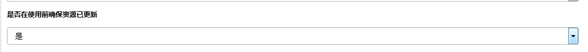

在使用管理后台中离线资源功能时会看到如图所示的选项。

有两个选项，可选更新和强制更新。
如果上传的资源用户不下载就会导致APP运行不了请选择强制更新。
如果上传的资源用户不下载不会影响正常的运行流程请选择可选更新。

如图可见资源分类为两个选项，插件和普通。
插件资源属于客户端资源文件中特殊的一种，它可能包含Lua脚本、HTML页面等多个元素，以一个功能集合为单位被打包，一般以channel为单位打包，插件资源以zip压缩文件的形式提供。
所有不包含在插件中的资源都为普通资源，普通资源以单个文件的形式提供，比如单个图片，单个txt文件等。

如图可见当资源分类选择为插件时，会出现下载选项，有两个选项，可选下载和必选下载。
选择插件资源为可选下载时，不管更新选项选择的为可选更新还是强制更新客户端都不会主动发起下载动作。
选择插件资源位必选下载时，当更新选项为强制更新时客户端会主动发起下载，当选择为可选更新，在用户选择确定更新后客户端发起下载动作。
综合上面两项的说明，在资源上传的时候必须注意每个资源的分类，如果为可下可不下的资源请选择可选更新。
举个例子：
客户提出将九宫格的每个菜单图片更改为更漂亮的一版，此时就算不更新这些图片所有功能都能正常访问，所以在上传时选择可选更新，用户如果选择了确认更新，则会看到新版图片，对于用户来说他也能接受突然图片变了。如果此时选择为强制更新，用户看到新版图片会觉得比较突兀。
客户需要增加一个大额转账的功能，此时以大额转账为功能单位打包了插件资源，如果用户不下载此插件就不能使用此功能，此时根据客户需求，如果为用户手动触发下载则选择下载选项为可选下载，此时更新选项根据其他资源的更新要求来选择。如果为必须下载使用则选择更新选项为强制更新同时选择下载选项为必选下载，这样用户能正常使用此功能。

确保更新选项是为了保证在资源下载中正好需要使用到此资源，如果此选项选择为是则在此资源下载完成后使用此资源，如果选择为否则使用旧资源不保证此时使用资源为最新资源。
先了解一下离线功能运行的大概流程。 客户端首先与EWP服务器建立加密信道，在信道建立成功后，请求resource/update(描述文件比对接口)，由于此接口为加密接口，所以必须在信道建立成功后请求。大家都知道，在我们的手机银行流程中，首界面在信道建立成功后返回，如果此时首界面需要很多离线资源，但是描述文件比对接口还没有请求完成，客户端此时不知道这些资源的下载地址，此时就会导致首界面加载不成功，造成用户体验不好。 就算此时比对接口已经请求完成，客户端知道了资源的下载地址，在界面展示的同时去下载这些资源也会导致首界面加载过慢，造成用户体验不好。
针对这种情况的解决方案为预置部分必须资源在客户端，这样在首界面加载时客户端可以直接取用现有资源不用去下载导致加载过慢或者加载不出来。
不管有无预置资源，我们在脚本中调用一遍相关接口了解一下各种接口的用法和注意事项。
具体各个接口的说明请参照参考手册中相关说明; 先看一下下面这个function：
local content;
--[[
@doc:tls回调
]]--
function tls_callback(params)
content = params["content"];
local update = params["update"];
--[[
0为不更新
1为必选资源描述更新
2为可选资源描述更新
3为必选,可选资源描述都需要更新
]]--
if update == 1 or update == 2 or update == 3 then
--更新资源描述
offline:update_desc(updateDesc_callback);
else
location:replace(content);
end;
end;
--[[
@doc:请求资源更新接口回调
@updateState:
1:表示强制更新；
0:表示用户可以选择是否更新；
-1:表示不需要更新；
-2:表示网络update接口请求失败。
]]--
function updateDesc_callback(updateState)
if updateState == 0 then
window:alert("您有新的离线资源需要下载，是否更新？", "确定", "取消", update_alert_callback_two);
elseif updateState == 1 then
--自动更新必选资源
offline:update_resource();
window:alert("有离线资源正在更新", "确定", update_alert_callback_one);
elseif updateState == -1 then
--页面替换
location:replace(content);
else
window:alert("更新接口请求失败！请稍后重试，目前不影响使用。");
end
end;
--[[
@doc:window:alert 回调方法
updateState = 0 时，用户点击确定开始下载
]]--
function update_alert_callback_two(btnIndex)
if btnIndex == 0 then
-- 用户点击[确定]按钮
offline:update_resource();
end
-- 页面替换
location:replace(content);
end
--[[
@doc:window:alert 回调方法
updateState = 1 时，用户点击确定展示界面
]]--
function update_alert_callback_one(btnIndex)
--页面替换
location:replace(content);
end
根据上面这一系列的方法调用以及回调，我们假设一个场景：
replace的content界面里面有部分图片和lua脚本需要从离线资源中获取，此时为了保证展示界面的正常，我们会优先下载这些使用到的资源，不过此时用户需要等待一段资源下载。如果此时碰到资源下载失败，客户端没有对确保资源重新下载的机制，那么此时首界面不能正常展示，虽然此时强制退出然后重新进入会重新下载，但是用户体验会特别差。所以最好还是将必须的离线资源预置到客户端中。如果预置资源需要更新，会确保当前使用的资源优先更新，保证使用为服务器上最新资源。